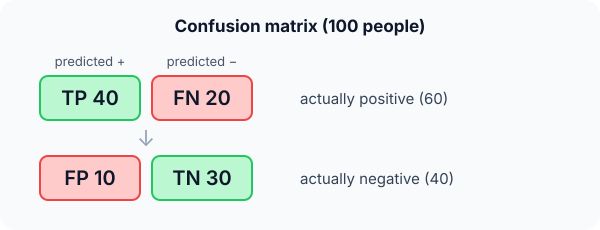

Prerequisites
- Classification.
- Fractions and percentages.
- The words "positive" (the class we look for) and "negative".
The analogy
Everyday analogy
Think of a fishing net. Precision asks: of everything in the net, how much is fish and not old boots? Recall asks: of all the fish in the lake, how many did the net catch?
A tiny net catches only fish (high precision) but few of them (low recall). A huge net catches most fish (high recall) plus lots of boots (low precision). Classifiers face the same trade-off.
How it works
The four counts: TP: predicted positive, really positive. FP: predicted positive, really negative. FN: predicted negative, really positive. TN: predicted negative, really negative.
Start with the confusion matrix by hand
TP = 40, FP = 10, FN = 20, TN = 30 (100 people). Predict each metric, then open "Check".
Example: predict before you read
Step 1. Accuracy: the share of all predictions that are right.
Check
$(40 + 30) / 100 = 0.70$.
Step 2. Cover the next line and guess: precision = TP / (TP + FP), and recall = TP / (TP + FN).
Check
Precision $= 40 / 50 = 0.80$. Recall $= 40 / 60 \approx 0.667$.
Step 3. F1 is the harmonic mean of precision and recall. Predict it.
Check
$F1 = 2 \cdot 0.8 \cdot 0.667 / (0.8 + 0.667) \approx 0.727$.

Quick recall: Before reading further, cover the text above and say out loud: which counts does precision use, and which does recall use?
Check your answer
Precision: TP and FP (everything predicted positive). Recall: TP and FN (everything actually positive).
Finish the picture: when accuracy lies
1,000 transactions, 10 of them fraud. A lazy model predicts "not fraud" every time.
- Accuracy. Predict it.
Check
990 / 1000 = 99%. It looks excellent.
- Recall for fraud. Predict it, and what it reveals.
Check
0 / 10 = 0: it catches no fraud at all. On imbalanced data, look at recall, precision and F1, not accuracy.
Quick recall: Without scrolling up, say out loud: why does the "always negative" model get 99% accuracy but is useless?
Check your answer
Only 1% of cases are positive, so saying "negative" every time is right 99% of the time while catching none of the positives: recall 0.
Full worked calculation
The page's disease test (TP = 40, FP = 10, FN = 20, TN = 30), with every metric computed. Then we move the decision threshold up and down and recompute everything, to see the precision-recall trade-off in numbers.
| Threshold | TP | FP | FN | TN | Precision | Recall | F1 | Accuracy |
|---|---|---|---|---|---|---|---|---|
| Strict (high) | 30 | 4 | 30 | 36 | 0.882 | 0.500 | 0.638 | 0.66 |
| Default | 40 | 10 | 20 | 30 | 0.800 | 0.667 | 0.727 | 0.70 |
| Lenient (low) | 55 | 25 | 5 | 15 | 0.688 | 0.917 | 0.786 | 0.70 |
-
1Lay out the confusion matrix
$$\begin{array}{c|cc} & \text{pred} + & \text{pred} - \\ \hline \text{actual} + & TP = 40 & FN = 20 \\ \text{actual} - & FP = 10 & TN = 30 \end{array}$$Rows are the truth (60 sick, 40 healthy), columns the prediction. Every metric below is a ratio of cells from this table, so writing it first avoids mixing up FP and FN.
-
2Accuracy
$$\frac{TP + TN}{TP + FP + FN + TN} = \frac{40 + 30}{100} = 0.70$$The diagonal over everything. It treats a miss and a false alarm as equally bad, and it says nothing about which one happens.
-
3Precision
$$\frac{TP}{TP + FP} = \frac{40}{40 + 10} = 0.80$$The denominator is the "predicted +" column: the 50 people the test flagged. 8 out of 10 flagged people are really sick, so a positive result is fairly trustworthy.
-
4Recall and specificity
$$\text{Recall} = \frac{TP}{TP + FN} = \frac{40}{60} = 0.667, \qquad \text{Specificity} = \frac{TN}{TN + FP} = \frac{30}{40} = 0.75$$Recall uses the "actual +" row: of the 60 sick people, the test finds two thirds and sends 20 home undiagnosed. Specificity is the same idea for the healthy row.
-
5F1, and why not the ordinary mean
$$F_1 = \frac{2 \cdot 0.8 \cdot 0.667}{0.8 + 0.667} = \frac{1.067}{1.467} = 0.727 \quad \text{vs} \quad \frac{0.8 + 0.667}{2} = 0.733$$Here precision and recall are close, so both averages agree. The harmonic mean only differs strongly when one is much smaller, as in Exercise 2 (0.45 vs 0.6).
-
6Raise the threshold
$$TP = 30,\; FP = 4 \;\Rightarrow\; P = \tfrac{30}{34} = 0.882, \quad R = \tfrac{30}{60} = 0.50, \quad F_1 = 0.638$$Demanding more evidence before saying "sick" removes false alarms (10 → 4), so precision rises. But 10 more sick people now slip through, so recall drops to one half.
-
7Lower the threshold
$$TP = 55,\; FP = 25 \;\Rightarrow\; P = \tfrac{55}{80} = 0.688, \quad R = \tfrac{55}{60} = 0.917, \quad F_1 = 0.786$$Flagging more people catches almost every sick person (only 5 missed) at the price of 25 false alarms. Accuracy is still 0.70: it did not notice anything changed.
What the numbers tell us
Moving the threshold trades precision for recall: 0.88 / 0.50 → 0.80 / 0.67 → 0.69 / 0.92. Accuracy barely moves (0.66–0.70), so it hides the choice entirely.
For screening, where a miss is the costly mistake, the lenient threshold is best: recall 0.92 and also the highest F1. A follow-up test then clears the false alarms.
The rule in plain words
Build the 2 × 2 confusion matrix from predictions and truth. Precision = TP / (TP + FP): how trustworthy a "positive" is. Recall = TP / (TP + FN): how many positives are found.
Use F1 when you need one number that balances both, and choose the metric that matches the cost of each mistake.
Quick recall: Before you read the code, write the formulas for accuracy, precision, recall and F1 in your own words. Then check below.
Check your answer
Accuracy: correct predictions over all. Precision: true positives over all predicted positives. Recall: true positives over all real positives. F1: twice their product over their sum.
The code
Read this code after you have computed the metrics by hand. It will make more sense.
void metrics(int tp, int fp, int fn, int tn, double out[]) {
out[0] = (double)(tp + tn) / (tp + fp + fn + tn); /* accuracy */
out[1] = (double)tp / (tp + fp); /* precision: trust in "positive" */
out[2] = (double)tp / (tp + fn); /* recall: share of positives found */
out[3] = 2 * out[1] * out[2] / (out[1] + out[2]); /* F1: harmonic mean */
}Definition
What you just did, in one line: a confusion matrix counts TP, FP, FN, TN; precision = TP/(TP+FP), recall = TP/(TP+FN), and F1 is their harmonic mean.
flowchart TD
A{"Which mistake is worse?"} -->|"missing a positive (FN)"| R["Maximise recall: disease screening, fraud"]
A -->|"a false alarm (FP)"| P["Maximise precision: spam filter, legal evidence"]
A -->|"both matter"| F["Use F1"]
A -->|"classes balanced, equal costs"| ACC["Accuracy is fine"]
Putting numbers on it
Quick recall: Before looking at the formula, predict: if precision is 1.0 and recall is 0.1, is F1 closer to 0.55 or to 0.18?
Check your answer
About 0.18. The harmonic mean is pulled towards the smaller value, so F1 punishes a big imbalance.
The four formulas, with our numbers:
$$\text{Precision} = \tfrac{TP}{TP + FP} = \tfrac{40}{50} = 0.80, \quad \text{Recall} = \tfrac{TP}{TP + FN} = \tfrac{40}{60} \approx 0.67, \quad F_1 = \tfrac{2PR}{P + R} \approx 0.73$$Specificity, TN / (TN + FP) = 30 / 40 = 0.75, is the recall of the negative class.
| Metric | Formula | Our value | Answers |
|---|---|---|---|
| Accuracy | $\frac{TP + TN}{\text{all}}$ | 0.70 | How often is it right? |
| Precision | $\frac{TP}{TP + FP}$ | 0.80 | When it says positive, is it? |
| Recall (sensitivity) | $\frac{TP}{TP + FN}$ | 0.67 | How many positives does it find? |
| Specificity | $\frac{TN}{TN + FP}$ | 0.75 | How many negatives does it clear? |
| F1 | $\frac{2PR}{P + R}$ | 0.73 | Balance of precision and recall |
Warning
Raising the decision threshold usually raises precision and lowers recall, and vice versa. Quoting one without the other is meaningless; report both, or F1, or the whole precision-recall curve.
Exam tip
Write the 2 × 2 matrix first, with rows = truth and columns = prediction. Then every formula is a ratio of cells, and you won't mix up FP and FN.
Common mistakes
- Swapping FP and FN: FP is a false alarm (predicted positive), FN is a miss.
- Using accuracy on imbalanced data.
- Averaging precision and recall with an ordinary mean instead of the harmonic mean.
Try it yourself
Exercise 1 (warm-up)
TP = 8, FP = 2, FN = 8, TN = 82. Compute precision, recall and accuracy.
Hint
Precision uses the predicted-positive column; recall the actual-positive row.
Answer
Precision 8/10 = 0.8, recall 8/16 = 0.5, accuracy 90/100 = 0.9.
Exercise 2 (a bit harder)
A model has precision 0.9 and recall 0.3. Compute F1, and compare it with the ordinary average. Which better reflects the model? Write your answer down before you open it.
Show answer
F1 = 2 · 0.9 · 0.3 / 1.2 = 0.45; the ordinary average is 0.6. F1 is better: a model that misses 70% of positives shouldn't look "60% good".
Did you know?
Did you know?
Precision and recall come from information retrieval in the 1950s–60s: of the documents a search returns, how many are relevant (precision), and how many relevant documents does it find (recall)?
Medical tests use the names sensitivity (recall) and specificity, and doctors choose thresholds by weighing missed diagnoses against false alarms.
Key points to remember
If you remember one thing from each line, remember the because.
- Accuracy can mislead because on imbalanced data predicting the majority class already scores high.
- Precision measures trust in positives because its denominator is everything predicted positive.
- Recall measures coverage because its denominator is everything actually positive.
- F1 punishes imbalance because the harmonic mean stays close to the smaller of precision and recall.
- The right metric depends on costs because a missed disease and a false spam alarm are not equally bad.
Self-check questions
Answer these in order, out loud. They follow the page, so your answers become the script of your video.
- How are precision and recall like a fishing net?
Sample answer
Precision is the share of the catch that is fish; recall is the share of all the lake's fish that were caught.
- With TP 40, FP 10, FN 20, TN 30, compute accuracy, precision, recall and F1.
Sample answer
Accuracy 0.70, precision 0.80, recall about 0.67, F1 about 0.73.
- Why does the code cast to
doublebefore dividing?A good answer mentions integer division.
Sample answer
In C, dividing two ints truncates: 40 / 50 would be 0. Casting one side to double gives 0.8.
- So what are precision and recall, in one sentence each?
Sample answer
Precision is the share of predicted positives that are really positive; recall is the share of real positives that the model finds.
- Why is accuracy misleading on imbalanced data?
A good answer uses the fraud example.
Sample answer
With 10 frauds in 1,000, always predicting "not fraud" scores 99% accuracy while catching nothing; recall reveals it is 0.
- What are the formulas for precision, recall and F1?
Sample answer
TP/(TP+FP), TP/(TP+FN), and $2PR/(P+R)$.
- For cancer screening, which metric would you prioritise, and why?
Sample answer
Recall, because missing a sick patient (FN) is far worse than a false alarm, which a follow-up test can clear.
- If you had to teach this to a friend in 2 minutes, what would you leave out, and why?
Sample answer
I'd leave out specificity and threshold curves. I'd keep the fishing-net analogy, the 100-person confusion matrix, and "accuracy can lie; precision = trust, recall = coverage".
External resources
- Google ML Crash Course: Accuracy, precision, recall: interactive explanation with examples.
- scikit-learn: Classification metrics: every metric with code.
- Wikipedia: Precision and recall: definitions and related measures.
Videos
- YouTube search: StatQuest confusion matrix: StatQuest on the confusion matrix and its metrics.